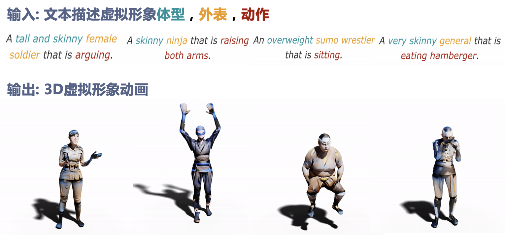
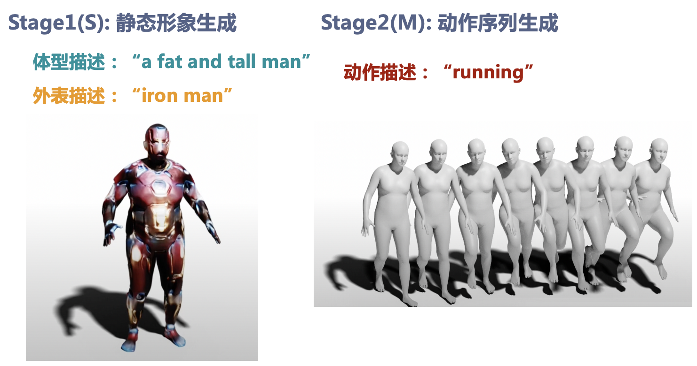
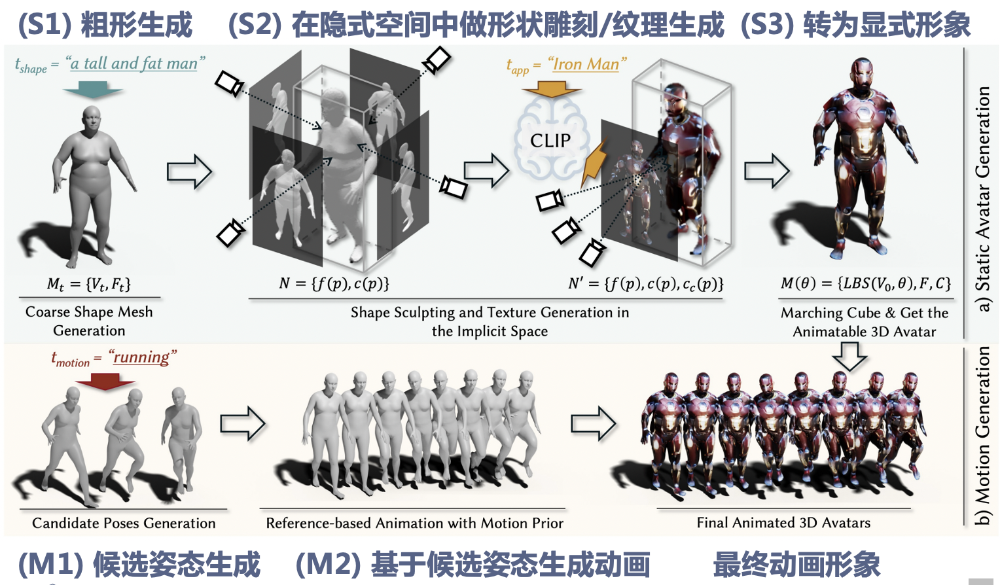
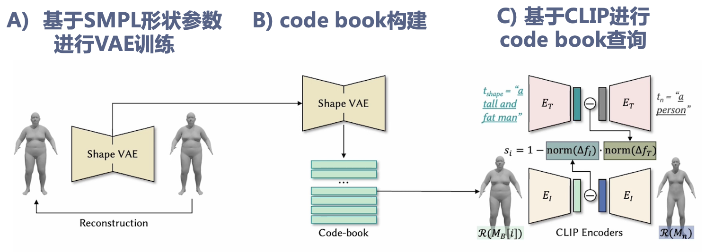
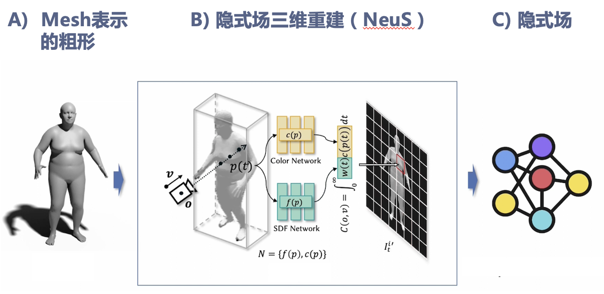
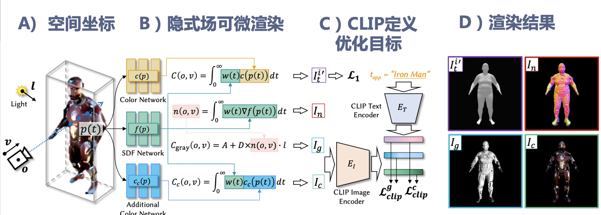
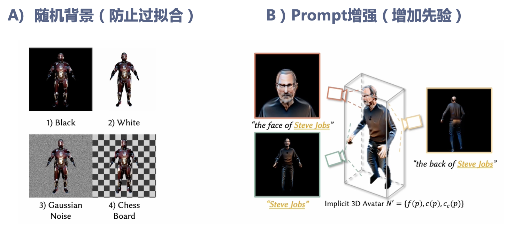
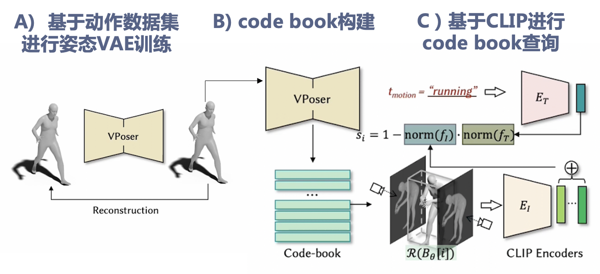
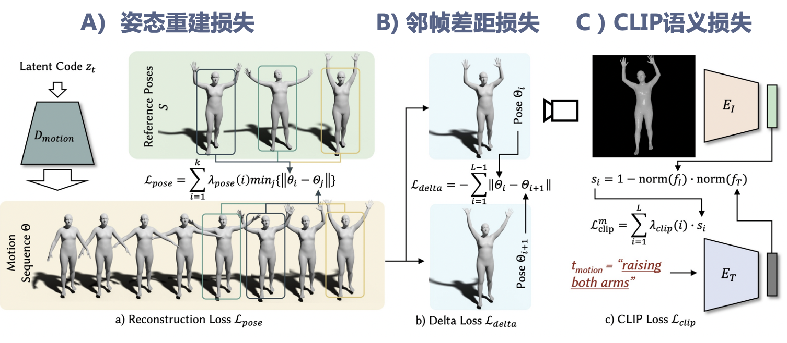
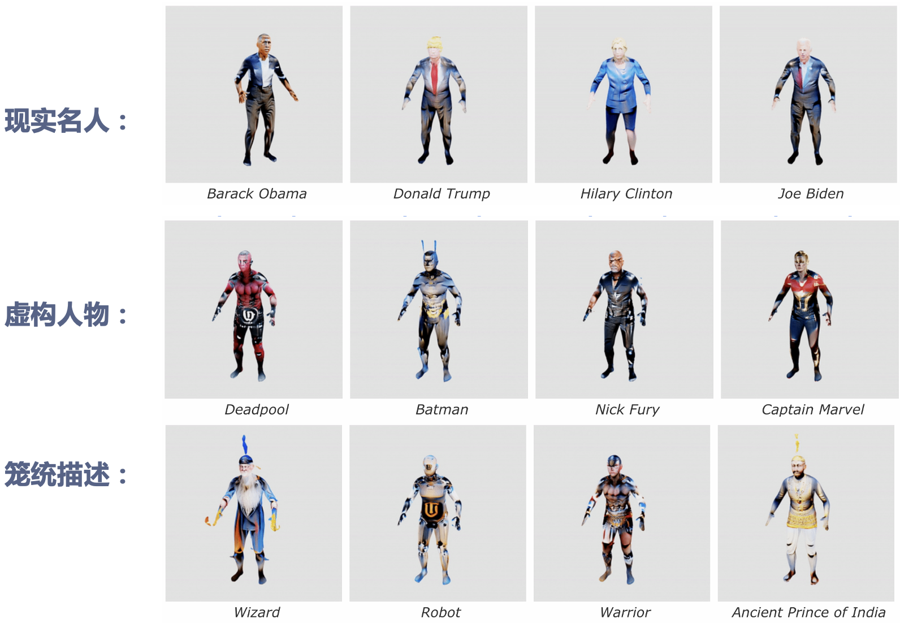

论文：AvatarCLIP: Zero-Shot Text-Driven Generation and Animation of 3D Avatars
作者：Fangzhou Hong, Mingyuan Zhang, Liang Pan, Zhongang Cai, Lei Yang, Ziwei Liu
发表：SIGGRAPH 2022
3D虚拟化身创建的应用非常广泛，然而整个创建过程通常需要大量时间、人力和专业性。本文提出了AvatarCLIP，一个零样本文本驱动生成虚拟化身的框架，来使普通用户也能快速创建虚拟化身。用户仅需要用文本描述想要的体型，外表和动作，就可以创建对应的虚拟化身和动画。本框架主要利用了跨文本图像模型CLIP来监督用神经隐式场表示的人体的生成(包括对3D几何形状，纹理和动画的监督)。作者用一系列定性定量实验证明了AvatarCLIP在各种零样本虚拟化身生成任务上的有效性和通用性。
背景介绍
自2021年初跨模态模型CLIP被提出以来，产生了一系列文本驱动生成的工作，如使用文本描述去驱动生成对应图像（如DALL-E，DALL-E 2，Stable Diffusion
），以及使用文本描述去驱动生成3D模型（如Dream Fields，Text2Mesh，Dream Fusion）。文本驱动的生成方法大大降低了内容生成的难度和使用门槛，被认为是非常有潜力的内容生成技术。
虚拟化身创建的应用也非常广泛，然后创建虚拟化身需要大量的时间和很高的门槛。本文提出了AvatarCLIP，一个利用CLIP模型来实现文本驱动虚拟化身生成及动画的框架。（如下图所示，用户只需要用文本指定体型、外表和动作，就可以创建对应的动态虚拟化身）。

相关工作
- Avatar Modeling and Generation
- Motion Synthesis
- Zero-shot Text-driven Generation
方法
方法概览
虚拟形象的生成主要分成两个部分：
静态形象生成：根据用户对体型和外表的描述，生成对应的静态形象。
动作序列生成：根据用户对动作的描述，生成对应的动作序列。

方法流程
（S1）粗形生成：根据用户给出的体型描述，生成一个相应的用网格表示的粗糙体模。
（S2）在隐式空间中做形状雕刻/纹理生成：将用网格表示的粗糙体模转用神经隐式场表示，并且用CLIP模型作为监督信号来对该粗糙体模进行形状雕刻和纹理生成，使得其符合用户描述的外表。
（S3）转为显式形象：将生成好的隐式形象重新转成显式的mesh形式。
（M1）候选姿态生成：根据用户给出的候选姿势描述，生成一系列候选姿势。
（M2）基于候选姿态生成动画：基于M1中生成的候选姿势，生成一个连贯的动作序列。
最终将得到的动作序列应用于得到的静态形象，即为基于文本生成的虚拟化身。

具体方法
（S1）粗形生成
为了生成符合用户体型描述的粗糙体模，作者首先针对SMPL形状参数空间训练了一个VAE模型，从而得到了一个表达人体体型的隐空间，然后通过得该隐空间做k-means聚类得到了一系列聚类中心作为代表体型，从而得到了一个codebook。然后基于CLIP模型去寻找codebook中与文本描述最接近的体型。

（S2）在隐式空间中做形状雕刻/纹理生成
首先通过类似NeRF的三维重建方法在用神经网络表示的隐式场中重建用mesh表示粗糙人体模型。

通过可微分渲染得到不同角度的虚拟形象图片，使用CLIP模型来计算这些虚拟形象图片和用户文本描述的差异作为监督损失。由于使用的是可微分渲染器，该监督损失的梯度可以反向传播到表示虚拟形象的隐式场，从而实现符合文本描述的形状雕刻和纹理生成。

为了提高生成的质量，作者使用了两个技巧，一个是在渲染虚拟形象图片时使用各种不同的背景从而减少过拟合，另一个是利用人体形状的先验，在不同相机视角使用不同的prompt作为CLIP模型的文本输入（如对脸部视角添加face的关键词）。

（S3）转为显式形象
在隐式空间中完成形状雕刻和纹理生成后，使用marching cube的方法将隐式形象重新转为用mesh表示的显示形象，使得能估计关节点并应用之后生成的动作。
（M1）候选姿态生成
与先前生成粗形的方法相似，作者首先基于一个人体动作数据集训练了一个VAE模型，从而得到了一个表达人体动作姿势的隐空间，然后通过得该隐空间做k-means聚类得到了一系列聚类中心作为代表体型，从而得到了一个codebook。然后基于CLIP模型去寻找codebook中与文本描述最接近的动作姿势。

（M2）基于候选姿态生成动画
在得到了候选姿态之后，作者通过优化动作隐空间中向量序列的方法得到最终的动作序列。为了使得得到的动画尽可能自然，同时与候选姿势关联，作者设计了三个损失来做联合优化。
姿态重建损失：计算每个候选姿势与动作序列中最相似的一帧的差异作为损失，使得动作序列能出现候选姿势。
邻帧差距损失：计算动作序列每两帧之间的差异作为损失，使得动作序列避免出现过于平滑的情况。
邻帧差距损失：用CLIP模型计算动作序列每帧图片与动作文本描述的差异，并通过改变每一帧损失计算的权重使得越到后面的帧与动作文本描述越接近，从而使得动作序列有一个从自然状态到目标动作的过程。

实验结果
作者用一系列定性定量实验证明了AvatarCLIP在各种零样本虚拟化身生成任务上的有效性和通用性。下图展示了该方法能生成非常广泛的虚拟化身类型（包括真实人物、虚拟人物和笼统描述）。

更多动态实验结果见 https://hongfz16.github.io/projects/AvatarCLIP.html。
讨论总结
这篇文章对CLIP模型的多种使用方式值得参考。在之后项目中如果需要利用CLIP模型来做文本驱动的生成，我们也可以从三个思路出发去思考。
思路1：用CLIP提供的embedding去做条件向量喂给模型。优点是在数据集大的情况下效果好，且可以和不同模型组合。缺点是对数据集有要求。
思路2：用CLIP去直接优化目标参数。优点是不需要数据集。缺点是目标参数形式不一定适合优化，可能容易陷入局部最优/过拟合。
思路3：用CLIP去给离散的生成结果做Ranking。优点是实现较简单，数据集可以较小，且没有优化问题。缺点是依赖已有数据集中有限的聚类结果，通用性受限。
✉️ zjuvis@cad.zju.edu.cn